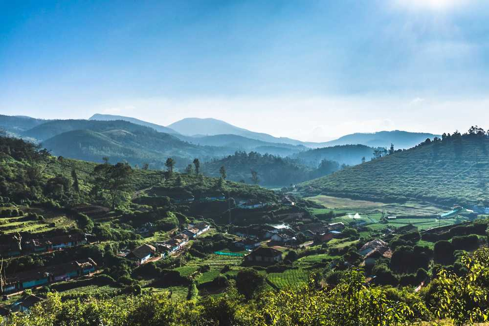
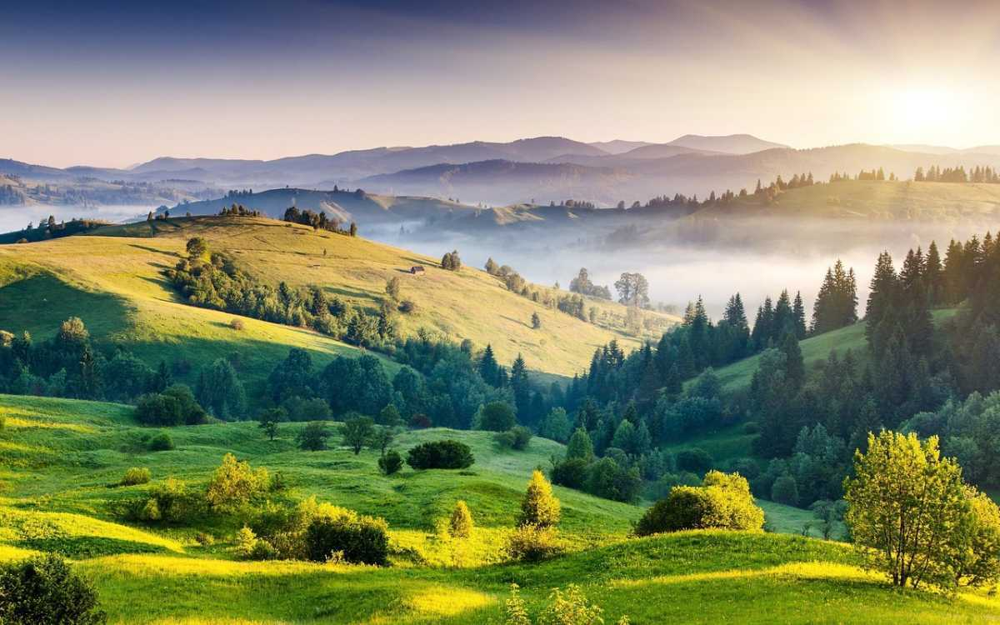
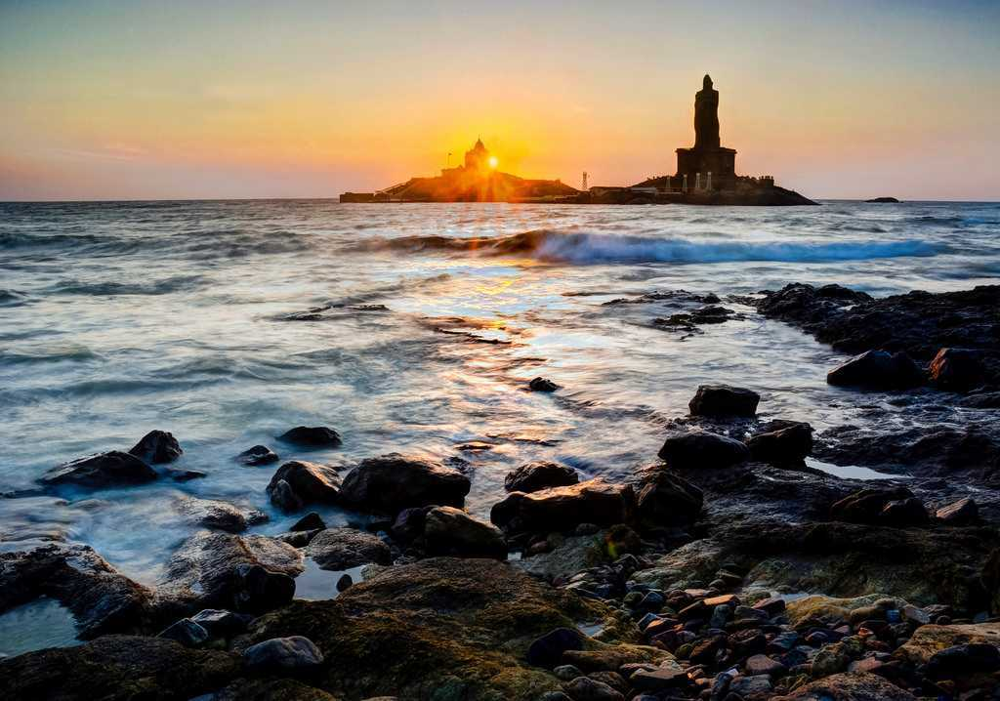
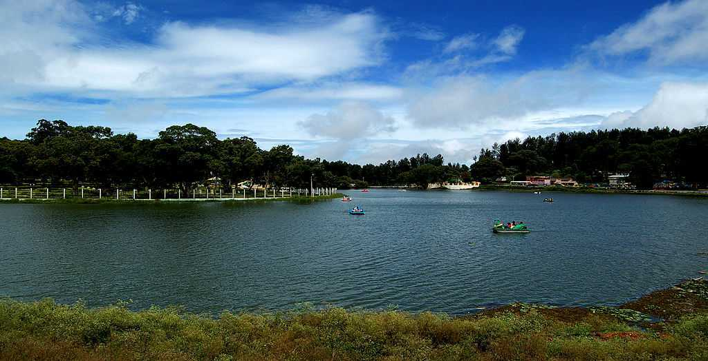
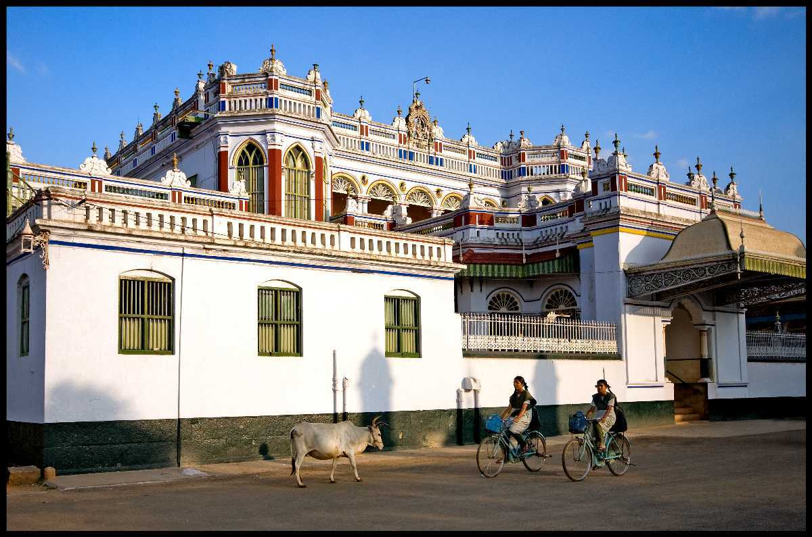

Formerly known as Madras, Chennai is the capital city of the state of Tamil Nadu, in the southern part of India. Located on the Coromandel coast of Bay of Bengal, Chennai is as dynamic as it is immersed in tradition.

Nestled amidst Nilgiri hills, Ooty, also known as Udagamandalam, is a hill station in Tamil Nadu which serves as a top-rated tourist destination.
Madurai, the cultural capital of Tamil Nadu, is one of the oldest continuously inhabited cities of India. Ruled by Pandya kings for the longest time in its history, it is called as the 'Lotus City' as it was planned and built in the shape of a lotus. Madurai is known for Meenakshi Amman Temple, dedicated to the goddess Meenakshi with a sanctum for her consort, Sundareshwarar.
Famous for its intricately carved temples and rock-cut caves, Mamallapuram or Mahabalipuram as it is famously known, is a historically important and well-loved tourist location situated on the Coromandel Coast along the Bay of Bengal, in the state of Tamil Nadu.

Located in the state of Tamil Nadu, Kodaikanal is one of the most famous honeymoon destinations in India. A Lakeside resort town of Tamil Nadu, Kodaikanal has a beautiful climate, mist-covered manicured cliffs and waterfall that come together to create the ideal setting for a perfect getaway.

Located at the southernmost tip of the Indian subcontinent, Kanyakumari is a captivating coastal town in the state of Tamil Nadu. Renowned for its breathtaking confluence of three vast water bodies – the Arabian Sea, the Bay of Bengal, and the Indian Ocean – Kanyakumari.
Often termed as 'Manchester of South India', Coimbatore, the second-largest city in Tamil Nadu, photographically situated on the banks of River Noyyal. Coimbatore, also known as Kovai, is a welcoming area with the backdrop of hustle-bustle and charm of activity and industry.
Rameshwaram is located on a beautiful island in the South Indian state of Tamil Nadu. It is separated by a small Pamban channel from Sri Lanka. According to Hindu mythology, this is the place where Lord Rama created a bridge across the sea to Sri Lanka.

Nestled in the Shivaroy Hills of Tamil Nadu, Yercaud is a hill station in the Eastern Ghats steeped in abundant greenery. Commonly called ‘Ooty of the Poor’, this region has a history dating back to the time of the British. Located at an altitude of 4970 feet, Yercaud is known for its vast expanses of coffee plantations and great weather.

Karaikudi, a Greater municipality in the Sivagangai district of Tamil Nadu, stands as the 21st largest urban agglomeration in the state, marked by its unique limestone-built palatial houses called Kaarai veedu.
A town that offers a significant history adorned in its countless temples and ashrams, Thiruvannamalai is where Hindu Mythology takes the form of stunning architecture.
Dhanushkodi is a small, sparsely populated beach town on the coast of Tamil Nadu. In the 1964, Dhanushkodi was hit by one of the worst storms India has ever seen. Ever since then, Tamil Nadu has rebuilt this town to become one of the most unique and unusual beach towns of India.